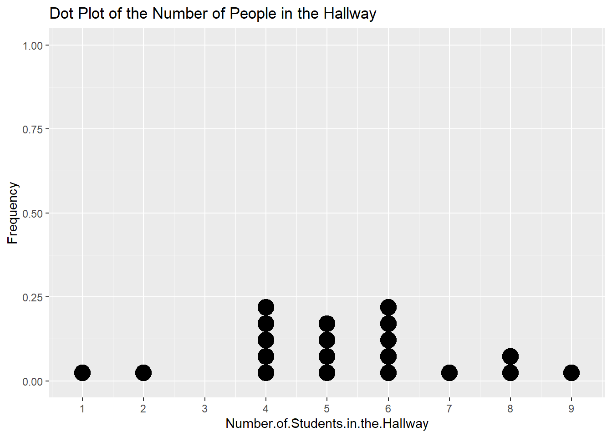
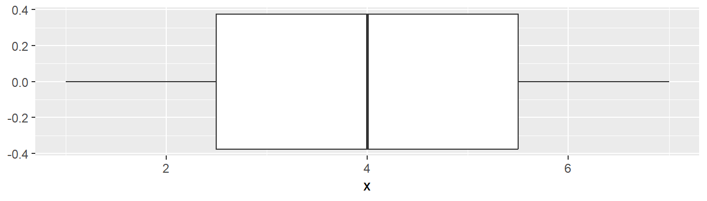
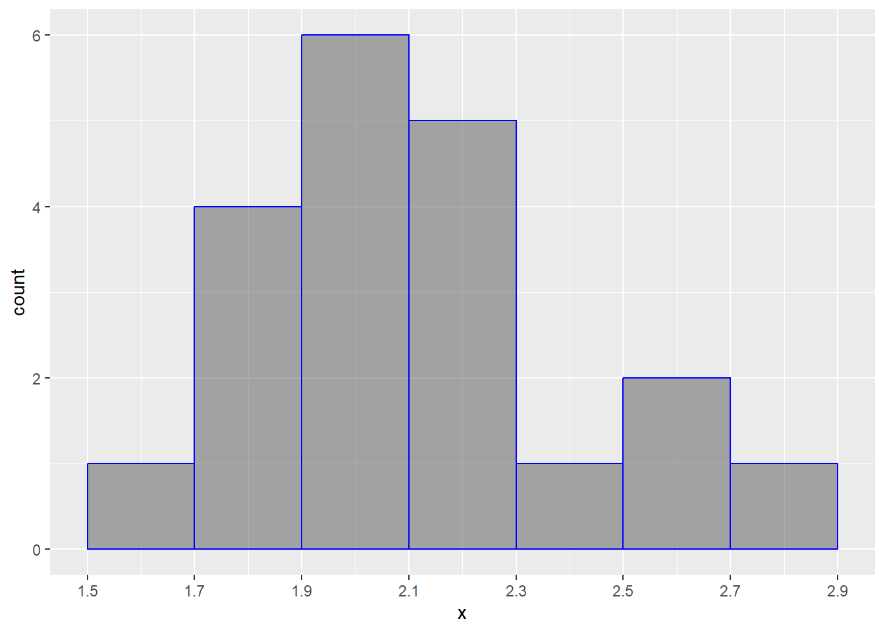
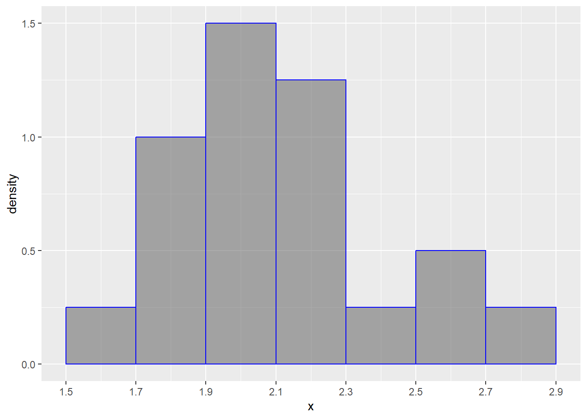

4 Quantative Data Visualizations
4.1 Dot Plots
Dot Plots
Dots Plots represent one quantitative variable by marking a dot for each value observed. They are mainly for discrete quantitative variables only and they are mainly useful in situations when you have a small range of number so that you can actually see how the data distribution varies across values.
Dot plots are simple, you draw a number line and then plot points above the number for each of the number that you see in the data.
Take this data for example:
Now count up each value to figure out how many dots you need at each value on the number line then plot your graph

4.2 Stemplots
Stemplots
In a stem plot, you need to determine a common “stem” of all the numbers that you’re plotting. So if you have integer numbers from 10 to 200, your stems will be everything from the tens and so on, so you’ll have stems from 1-20. Once you take the stems, you just write the “leaves” next to the stem that they belong.
These are also known as stem-and-leaf plots.
Using this data as an example,
A stem plot looks like this:
1 | 2: represents 12
leaf unit: 1
n: 20
0 | 1
1 | 8
2 |
3 | 36689
4 | 4
5 | 2339
6 | 0228
7 |
8 | 19
9 | 35
Important
Note that you also have to add a key to show what a stem + leaf means. The stem and leaves give no information on the decimals in the data, so as you see above, you need to give an example like (as shown in the example stemplot):
Key: 1\|2 = 12Here’s another example (sorted for convenience)
1 | 2: represents 1.2
leaf unit: 0.1
n: 50
3 | 3
3 | 579999
4 | 00334
4 | 556677788899
5 | 00112233444
5 | 667888999
6 | 234
6 | 5
7 | 124.3 Boxplots
Boxplots
Boxplots are primarily made of the five number summary of the data. The five number summary is made up of the:
- Minimum (min)
- First Quartile (\(Q_1\))
- Median
- Third Quartile (\(Q_3\))
- Maximum (max)
Also known as a box-and-whisker plot.
To make a simple boxplot, you use the first quartile, median, and third quartile to make the “box” and then use the minimum and maximum to make the “whiskers.”
For this simple list of numbers:
Our five number summary is:
Min. 1st Qu. Median 3rd Qu. Max.
1 2 4 6 7 As detailed above, our box plot then looks like:

Important
The last detail is that we can calculate outliers using the 1.5 IQR rule and show them on the boxplot. For either direction (left or right), if we see outliers in that direction, we only extend the whisker to the smallest and/or largest point that is not an outlier. Then we plot any outliers as individual points.
Look at this example data:
Five number summary:
Min. 1st Qu. Median 3rd Qu. Max.
-12 -5 -3 0 12 Our numbers calculated by the 1.5 IQR rule are:
[1] -12.5 7.5So our 12 is an outlier. which means we draw our right whisker to 6 and plot the 12 individually on the number line. Like so:

4.4 Histograms
Histograms
A histogram is similar to a bar plot, except that histograms are made for quantitative data and bars are continuous in the sense that there is no gap between bars. To make a histogram, select an appropriate equal intervals that make it so that you don’t have too many bars and that you don’t have too few bars.
Tip
Your goal with histograms, as with many other visualizations, is to be able to see the shape and characteristics of the distribution in question. If you have too many bars or too few bars, you won’t be able to see much important information (especially think of situations when you have many data points with very precise decimal measurements).
- Decide on your intervals (e.g. by 5’s, by 10’s, by 100’s)
- Within your intervals, count up the number of observations that belong in that “bin”. When you do so, count up observations so that you count the left end inclusive and the right end inclusive. So if you did intervals of 5, you would do something like counting up points \(0 \leq x < 5\), \(5 \leq x < 10\), and so on.
- Plot your bars.
Example:
Consider this example data set:
Our data has this set of summary statistics:
x
Min. :1.522
1st Qu.:1.912
Median :2.022
Mean :2.110
3rd Qu.:2.224
Max. :2.704 With this knowledge, let’s make our 7 “bins”, so let’s do these by every 0.2, starting at 1.5 to 2.9. This will be something that you build by intuition.
Now, count up our values:
[1.5,1.7) [1.7,1.9) [1.9,2.1) [2.1,2.3) [2.3,2.5) [2.5,2.7) [2.7,2.9]
1 4 6 5 1 2 1 Now, we just put it together. For each bin, we have a bar and the bars’ heights correspond to the number of individuals in each bin.

Again, just like bar graphs, we can instead do the relative frequencies (this is what you’ll see most of the time!!!)
[1.5,1.7) [1.7,1.9) [1.9,2.1) [2.1,2.3) [2.3,2.5) [2.5,2.7) [2.7,2.9]
0.05 0.20 0.30 0.25 0.05 0.10 0.05 
Warning
When you have a histogram like this, keep in mind that the bars always add up to 1 (or 100%).